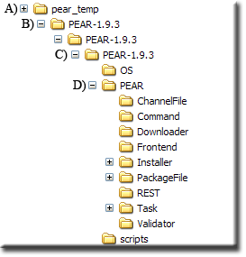
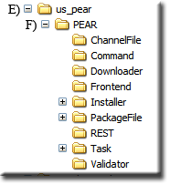
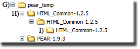
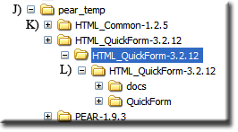
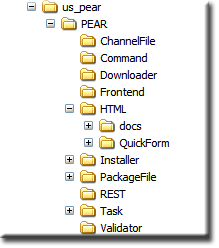

|
|
PHP - PEAR Manual Install |
This page covers manual installation of the PEAR core package; it is provided for reference only. Manually installing PEAR provides greater control, flexibility and exposes hidden detail. The following covers Pear instalation along with one of its components (classes) for testing.
Install PEAR core package
The first requirement is to install the PEAR core package. This core package is used by all other packages to extend their functionality.
Note: All PEAR files are distributed using double compression (Unix standard). These have a file extension of tgz. To uncompress these files you can install the file archiver 7-Zip. Alternatively, you can use the portable version from Portable Apps.
Download and Extract PEAR core package
That completes file extraction. You should have a folder structure as shown on the right.
|
 |
The PEAR core package is now ready to install on The Uniform Server.
Install core package on The Uniform Server
The Uniform Server has been pre-configured to run PEAR from a specific location UniServerZ\home\us_pear. With the exception of file .htaccess its contents requires deleting. Install PEAR as follows:
Note: This example again uses PEAR-1.9.3.tgz replace as appropriate with latest PEAR core package name.
|
 |
Installing PEAR packages
Installing PEAR packages is relatively easy. Download and extract the package and install it to the PEAR folder. To confirm our PEAR installation is working and to demonstrate how to install packages we will be using a package named QuickForm.
A Quick tour of PEAR repository
- First port of call is List Packages All packages have been grouped into sections. The number to the right of each section title is the total packages in this group.
- We are interested in the QuickForm package which comes under section HTML This page contains a list of all packages in this section.
- Scrolling down the page you will see enteries HTML_QuickForm, HTML_QuickForm2, HTML_QuickForm_advmultiselect etc. To the right is displayed the current status.
- Scroll to package HTML_QuickForm and click link.
- Scroll down the page and you will find an important section named Dependencies. For HTML_QuickForm you will see it requires HTML_Common. We do require this because our current installation contains no additional installed packages. The dependencies section provides a quick link; clicking the link HTML_Common will take you to the download page.
- At the top of each package page are the following links, Main, Download, Documentation, Bugs, Trackbacks. Generally you can find examples of how to use a package in the documentation. Alternatively, you can search the Internet. The download link opens a download page where you can download files for manual installation.
Installing Dependencies
|
 |
Where to install this file? Each distribution contains a file package.xml. Inside this file look for baseinstalldir which tells you the folder to install to. For this package it is HTML (baseinstalldir="HTML")
- F) Using explorer, navigate into folder UniServerZ\home\us_pear\PEAR
- Create a new folder HTML
- Using explorer navigate into folder HTML_Common-1.2.5 (last one in tree with this name).
- From this folder, copy file Common.php to folder UniServerZ\home\us_pear\PEAR\HTML
Installing PEAR Package - QuickForm
|
 |
|
Where to install this file? Each distribution contains a file package.xml inside this file look for baseinstalldir which tell you the folder to install to. For this package it is HTML (baseinstalldir="HTML" name="/")
The Uniform Server's PEAR folder will now look like that shown on the right.
|
 |
Form - Test Script
Create a new text file named form.php with the following content and save to folder UniServerZ\www
<!DOCTYPE HTML PUBLIC "-//W3C//DTD HTML 4.0 Transitional//EN">
<html>
<head>
<meta http-equiv="Content-Type" content="text/html; charset=UTF-8">
<title>Pear HTML_QuickForm test</title>
</head>
<body>
<?php
require_once "HTML/QuickForm.php";
$form = new HTML_QuickForm('frmTest', 'get');
$form->addElement('header', 'MyHeader', 'Testing QuickForm');
$form->addElement('text', 'MyTextBox', 'What is your name?');
$form->addElement('reset', 'btnClear', 'Clear');
$form->addElement('submit', 'btnSubmit', 'Submit');
$form->display();
?>
</body>
</html>
Test:
|

|
PEAR Alternate location
Although The Uniform Server uses a specific PEAR location, you can install to any location that suits your requirements.
For example, you can copy PEAR folder to folder UniServerZ\core\phpxx or perform a manual installation directely to this folder.
Adding packages to the PEAR folder has been covered in the above sections.
Change include path for PEAR
The include path in PHP’s configuration file php.ini requires changing to new PEAR folder location. There are three files to edit as follows:
- UniServerZ\core\phpxx\php_test.ini
- UniServerZ\core\phpxx\php_development.ini
- UniServerZ\core\phpxx\php_production.ini
In each of the above files locate the following line:
include_path = ".;${US_ROOTF}/home/us_pear/PEAR"
And change to:
include_path = ".;${US_ROOTF}/core/phpxx/PEAR"
Summary
Manual installation was included because there are times where you have no alternative. Installing Pear using go-pear is far easier since the process is automated.
The Uniform Server Zero Pear module ZeroXIII_pear_1_0_0 removes any tedium, just install and run the web-interface.
Where to next
PHP - PEAR Auto Install go-pear - This page covers using go-pear that automats the installation process.
PHP PEAR - This page covers the PEAR Front-end.